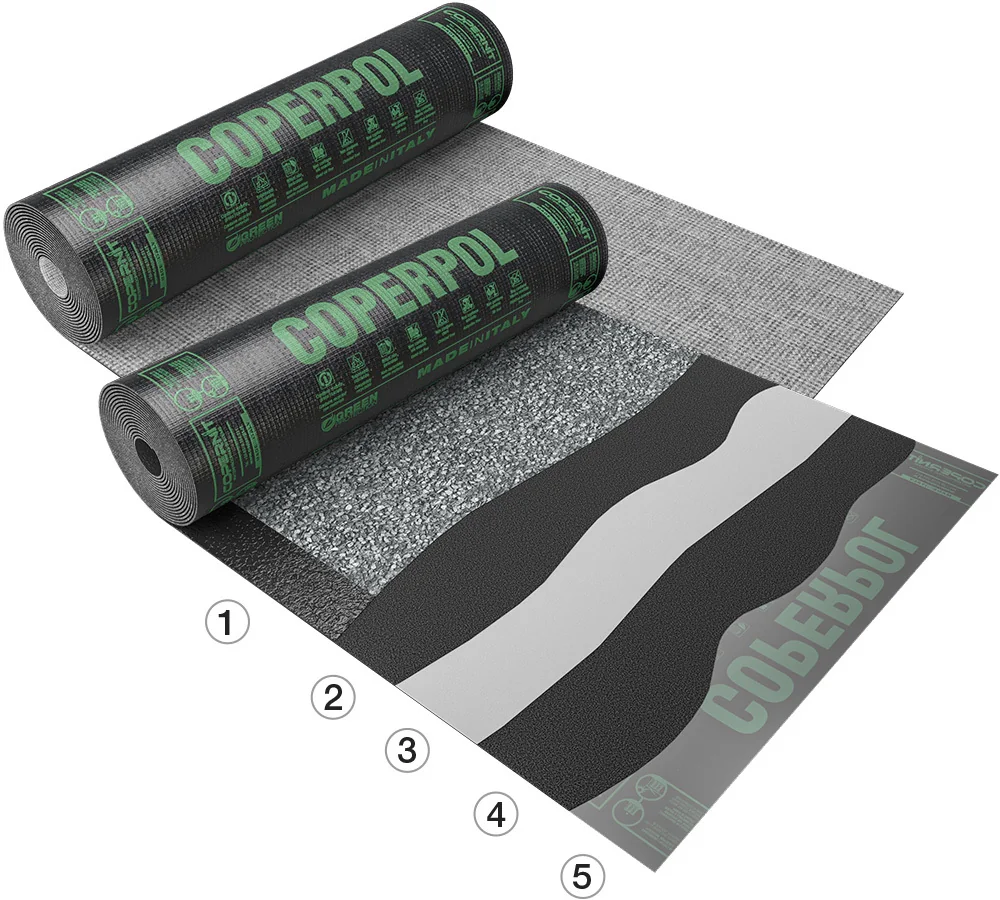
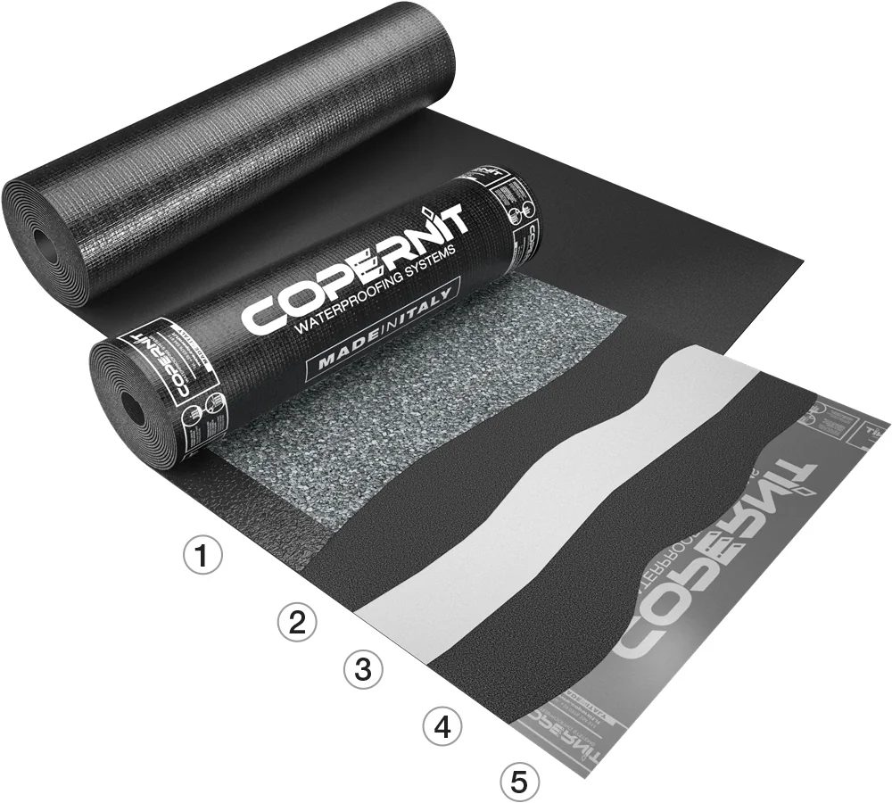
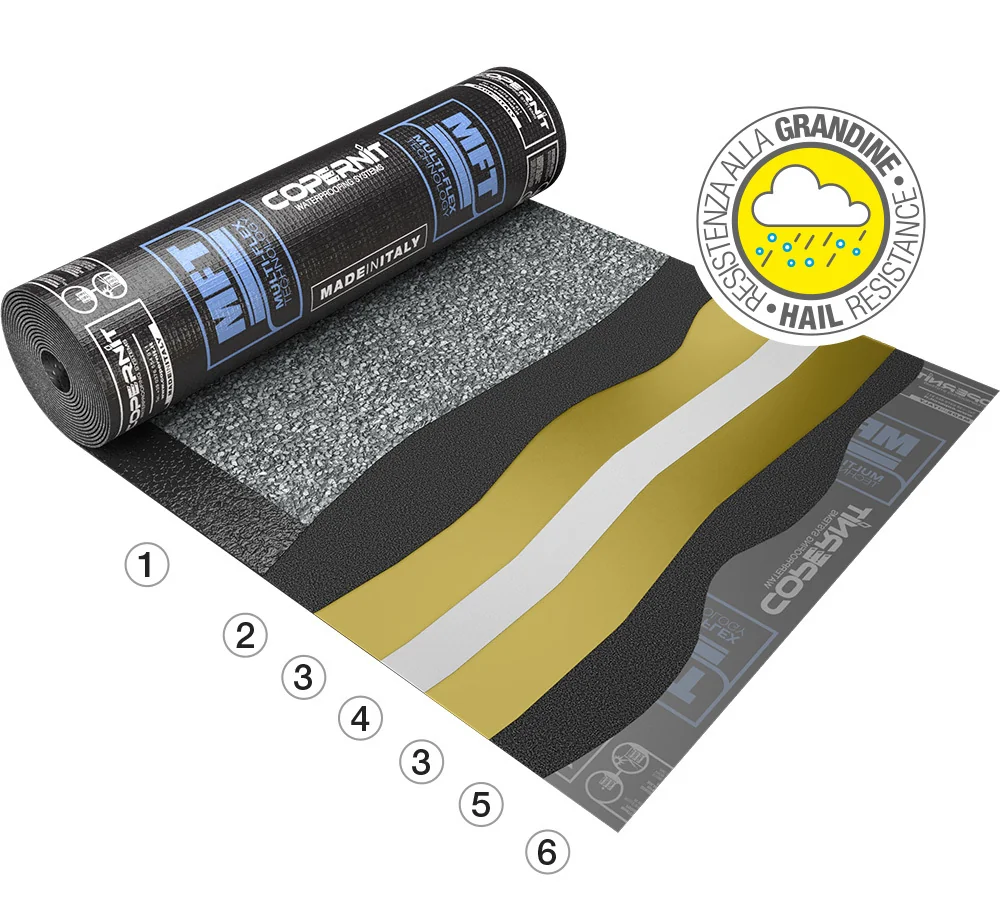
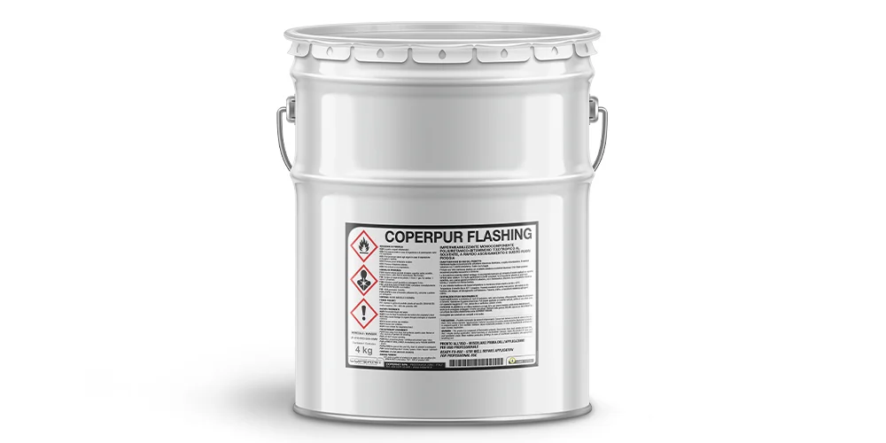
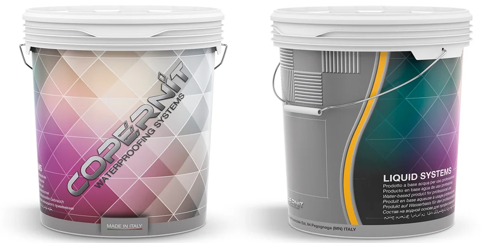

Copernit produce membrane bitume-polimero per l'impermeabilizzazione a Pegognaga (MN). La gamma comprende membrane APP, APAO, SBS e MFT, oltre a primer bituminosi e acrilici, per coperture, terrazzi e fondazioni.
Categorie
Scegli una categoria per vedere i prodotti della gamma Copernit.
 Membrane APP
Membrane bitume-polimero plastomeriche, per impermeabilizzazione tradizionale.
Vedi i prodotti
Membrane APP
Membrane bitume-polimero plastomeriche, per impermeabilizzazione tradizionale.
Vedi i prodotti

Membrane APAO Membrane elasto-plastomeriche di fascia tecnica, per applicazioni gravose e climi estremi. Vedi i prodotti
Membrane SBS Membrane elastomeriche, elastiche e resistenti all'invecchiamento termico. Vedi i prodotti
Membrane MFT Tecnologia Multi-Flex: tripla mescola APAO/SBS in un'unica membrana. Vedi i prodotti
Primer bituminosi Membrane liquide bitume-polimero per preparazione del supporto e impermeabilizzazione a freddo. Vedi i prodotti
Primer e fissativi acrilici Membrane liquide acriliche colorate, per finiture decorative e sistemi riflettenti. Vedi i prodotti